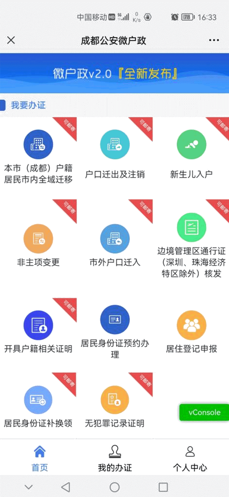

学院通知 · 教学通知
【温馨提示】成都市开通居民身份证丢失补领、损坏换领 “全程网办”
发布时间：2023-06-11
为全面提升户政便民服务水平，按照省公安厅统一部署，成都市推出居民身份证丢失补领、损坏换领 “全程网办”改革措施，实现“足不出户”办理居民身份证。相关情况简介如下： u 办理条件 成都市户籍居民且同时符合以下条件: 1.年满16周岁。 2.现居民身份证有效期为十年及以上。 3.上次申领居民身份证为省内现场办理且已采集指纹信息。 4.本次申请时距上次省内现场办理不超过5年。 u 办理情形 ✅ 丢失补领 ✅ 损坏换领 u 办理流程 Ø 一、登录成都公安微户政提交申请 l 微户政首页选择 “ 居民身份证补换领”， 按步骤提交申请 温馨提示 l 首次使用微户政的申请人需要先进行注册及实人认证； l 了解办理流程，仔细阅读“居民身份证丢失补领、损坏换领网上申办告知承诺书” Ø 二、选择领取方式及缴纳工本费 l 待公安机关审核通过后，可选择邮政快递到家，或自行前往受理机关领取。 l 选择领取方式后，按提示缴纳相关费用，完成后就开始制证啦～ Ø 三、等待制证-办理完成！ l 制证完成后，会通过公众号推送通知信息，根据选择的领取方式，居民身份证将邮寄到家或者自行前往线下领取 再次提醒关于办理进度 l 微信公众号推送信息通知，点击进入了解相应进度及状态 l 通过居民身份证补换领首页，选择“查询补办记录”了解进度及状态
